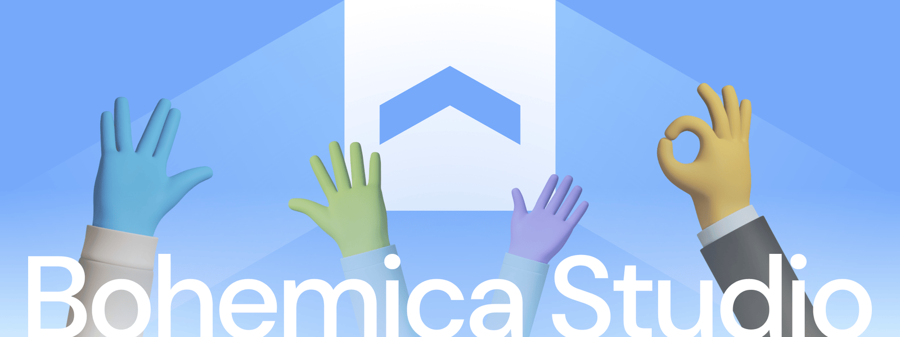

Current Focus
In the current period I have stayed active through maintenance, smaller technical work, portfolio development, and personal side projects while
sharpening where I want to take my experience next. The common thread is becoming clearer: I want to build useful systems with more ownership,
stronger product context, and a closer connection to real-world outcomes.
After years of working across platforms, dashboards, e-commerce flows, developer tooling, operational interfaces, and physical/digital prototypes, I
am ready to bring that range into a more serious product or engineering role. I am especially interested in internal tools, workflow platforms,
civic or public-service-adjacent technology, health, housing, energy, infrastructure, connected products, and practical AI-assisted workflows.
The right next team would value thoughtful engineering, good design, clear communication, and long-term maintainability. I want to stay hands-on
while helping shape products and services that make complex systems easier to understand, trust, and use.
Multi-site Healthcare CMS Platform
Between 2021 and 2025, I worked with CloudRaker on a multi-site healthcare web platform for The Fertility Partners, one of North America’s
largest fertility clinic groups. The work supported a growing network of clinic brands, each with its own content, visual identity, forms, SEO
needs, analytics, and operational requirements.
My role sat between implementation and technical direction. I translated stakeholder requirements into ApostropheCMS architecture, coordinated with
designers and developers, reviewed and tested releases, supported launches, and helped keep the sites stable after they went live. I was also a key
point of contact between CloudRaker, TFP, and the Bohemica Studio team.
The platform was built across ApostropheCMS 2 and 3, using reusable modules, custom widgets, shared templates, multilingual content patterns, and
editor-friendly configuration. I helped shape the system so that improvements could be shared across sites rather than rebuilt for every brand,
which made the platform easier to maintain and gave content teams more control over their own pages.
The work also included the less visible parts of production software: CI/CD and deployment workflows, staging and production releases, Sentry and
Raygun monitoring, OpenTelemetry and Jaeger diagnostics, analytics and custom form events, accessibility and SEO improvements, performance
investigation, release QA, and ongoing maintenance.
A significant part of the project involved sensitive form and data workflows, including appointment and referral-style forms, email delivery, Google
Sheets and CSV/cron processes, analytics tracking, Salesforce integration exposure, and API/authentication work. The result was a reusable,
production-tested CMS ecosystem for multiple healthcare brands, designed to be manageable for editors, developers, agency stakeholders, and the
client’s marketing teams.
ApostropheCMS Extensions
Alongside the main TFP platform work, I built and contributed to reusable ApostropheCMS tooling that improved how projects were started, extended,
synchronised, and maintained. These projects show the same pattern at a smaller scale: turning repeated delivery problems into shared systems that
benefit editors, developers, and future builds.
ApostropheCMS Template & Module Library
I created a shared template and module library for Apostrophe 3 sites, implemented as a Git submodule. It brought together base code, Tailwind CSS
styling, project configuration, reusable modules, and editor-facing patterns so new builds could start from a stable foundation rather than a blank
slate.
As projects evolved, improvements could be merged back into the library and reused across the network. This made common work faster and more
consistent while still leaving room for brand-specific design, custom widgets, form validation, scroll interactions, and WebGL content configured
through the CMS.
ApostropheCMS Sync Extension
Together with the Bohemica Studio team, I worked on a terminal-based Node.js utility for synchronising MongoDB collections and uploaded assets
between local, staging, and production environments. It replaced manual export/import work with a repeatable command-line workflow, making testing,
debugging, and deployment support more reliable across content-heavy CMS projects.
ApostropheCMS Stripe Extension
This open-source side project came from repeated ApostropheCMS and transactional-product work. It provides a Stripe integration that lets content
editors manage products, pricing, and checkout flows inside the CMS, while giving developers reusable patterns for secure payment implementation,
webhooks, and front-end purchase flows. The aim was to bring admin UX, commercial functionality, and reusable technical architecture into one
practical extension.
Bohemica Studio Team

As a co-founder of Bohemica Studio, I helped set the agency’s creative vision, technical direction, brand, and delivery standards. I designed
the studio identity and built our website as a public expression of the kind of work we wanted to do: visually considered, technically capable, and
clear enough for clients to trust.
I led our multidisciplinary team of designers and developers, fostering a culture of open communication and mutual trust. I believe great work comes
from empowering talented people, so I focused on creating an environment where team members felt confident to take initiative, share their ideas,
and contribute to our shared goals.
A key part of my role was connecting creative ambition with practical delivery. I encouraged modern tools and working practices, but the goal was
not novelty for its own sake; it was to help the team produce coherent, maintainable digital products that balanced craft, usability, client needs,
and technical judgement.
Bohemica Store
I developed reusable component templates for the e-commerce platform and advised on UI/UX improvements. The work helped standardise product-page
patterns, reduce repeated implementation effort, and keep the store experience visually consistent across light and dark presentation modes.
Bohemica Signage
I led the design and architecture of Bohemica Signage, a cloud-based digital signage platform for managing content across distributed display
networks. The core challenge was to make operational control feel simple: users needed to manage playlists, schedules, display groups, live screen
state, and multi-location content without getting lost in the system.
My role combined product structure, interface design, architecture diagrams, stakeholder discussion, and coordination with developers. As features
expanded, I helped keep the dashboard clear and operational: advanced scheduling and grouping functionality had to stay understandable for
non-technical users managing real displays in real places.
MMT Company Web Identity

I partnered with MMT s.r.o., a Czech industrial automation and robotics company, to redesign their brand identity and website. I developed a new
logo, visual identity, and ApostropheCMS site that made their technical expertise, custom machinery, and automation capabilities clearer to clients
and partners across Europe.
Working closely with their management team, we focused on a modern, content-led design that made complex industrial capabilities clear and
approachable. The multilingual CMS enabled their team to manage content independently and support growth into new markets while maintaining a
consistent and cohesive brand presence.
Aéropot: An Automated Ultraponic System for Indoor Plant Cultivation
Aéropot was born from my Master’s thesis in Sustainability, Entrepreneurship, and Design at Brunel University. The goal was to create a smart
indoor gardening system that made plant cultivation both accessible and highly efficient, while also serving as an educational tool for
understanding sustainable food production. Using ultrasonic misting (ultraponics), the system grows plants in a nutrient-rich fog that can reduce
water usage by up to 95% compared to soil-based cultivation, enabling year-round growing in compact indoor spaces. From the outset, it was a
multidisciplinary venture that blended environmental science, product design, software engineering, and hardware prototyping to turn a conceptual
idea into a fully functional proof of concept.
The design process was an end-to-end exercise in translating research into a tangible product. I conducted market research and competitor analysis
before moving into 3D CAD modelling in SolidWorks to develop the engineering specifications. The planter’s form was shaped using principles
such as the golden ratio and continuous curvature, resulting in a clean, ergonomic chassis suited for modern homes. Achieving this required numerous
iterations and close collaboration with workshop technicians to accommodate the physical constraints of the internal electronics. I worked
extensively with 3D printing technologies including the Stratasys F370 and Objet30 Prime, each with distinct material and resolution
characteristics. Larger structural components required post-processing to produce a watertight tank, while the translucent upper lid was
manufactured externally to achieve the precise light-diffusing properties needed for the integrated LED array. This design-led approach ensured that
the technical complexity remained hidden behind a simple and unobtrusive user experience.
One of the most technically demanding challenges was developing a custom ultrasonic atomiser circuit after off-the-shelf solutions proved
unreliable. This involved reverse-engineering a suitable driver, tuning high-frequency components, and iterative testing with an oscilloscope to
achieve a stable 1.7 MHz mist output. Although complex, the process was a valuable lesson in practical electronics, component tolerances, and
hands-on problem-solving, and it provided a foundation for addressing the additional engineering challenges that emerged throughout the build.
Automation of the system was handled by an Arduino microcontroller programmed in C++ to regulate the plant’s environment. It continuously
polled sensors measuring pH, nutrient concentration (TDS), temperature, and humidity, and used these data streams to control the LED grow lights,
ventilation fans, and nutrient atomisation cycles based on predefined optimal ranges. For remote access, I integrated an ESP8266 WiFi module to
communicate with the Blynk IoT platform through a custom application interface. Sensor readings were displayed in real time in the Blynk smartphone
app, which offered a configurable dashboard with widgets such as graphs, sliders, and value displays. In parallel, historical data was logged to a
Google Firebase real-time database using Blynk’s Webhook integration. This dual system provided immediate user feedback while creating a
persistent data layer for long-term analysis of growth patterns and environmental correlations, enabling ongoing optimisation of the system.
I also pursued the idea beyond the thesis through entrepreneurship and accelerator routes, including NACUE Varsity Pitch 2018 semi-finals, Central
Research Lab Hardware Accelerator, and a Santander-supported Brunel competition. From a single concept on paper to a working prototype, Aéropot
became a full product-development exercise: research, business planning, form and interaction design, hardware engineering, embedded programming,
IoT connectivity, and cloud-based data logging. The project brought design and engineering together around a practical question: how to make a
complex sustainable technology understandable, tangible, and usable.